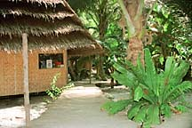

| Home / Dive Resorts / Live-Aboards / Snorkeling / Who We Are / Book a Trip |
© Copyright U.S. Dive Travel Travel Network.
[ Prices subject to change without notice. We always check for specials. Call 952-953-4124. ]
All prices are quoted in U.S. dollars & subject
to possible seasonal changes. Add Kosrae state tax + 7% USDT tariff.
Basic Daily Room Rates, with No Extras:
Since Sundays are a day of complete rest, & cessation of work on this
island,
tanks, weights & lunch -- approx $ZZZ per diver / day + tariff.
the resort's lounge is closed & no scuba diving is offered.
We offer the following special discounts for groups:
Transportation is one big factor behind the magic of Kosrae. It's challenging enough to get to Kosrae that it's unlikely ever to become another ho-hum glitzy little tourist island. The cost of air tickets & the good long day's distance from the West Coast, with an overnight in Guam normally, tend to weed out the madding crowds. But Kosrae is close enough via normal air routes to allow you reasonable access with no excrutiating hassles. That's a perfectly happy balance when it comes to the adventure "feel" of a place, we have learned over the years.
Continental's Air Micronesia lands its small jets on Kosrae five days a week. And this is no godforsaken backwater. It's a place well removed from city stress, but also just enough into the 20th Century to feel comfortable to most dive travelers. The local people are well educated & most speak really decent English. It's also a tradition that most local folks treat visitors as honored guests. And this part of the Kosrae ethos lends a special flavor to your vacation that's ineffable, & money cannot buy such a fine feeling.
Kosrae Village Resort is definitely a place where you can enjoy modern amenities (indoor plumbing, hot water, electricity) in a traditional Micronesian cultural setting. So no worries about some platoon of 8-inch quivering Mama Cucarachas sneaking in on you at night to haul you bodily from your bed. This lovely resort is a gem among Micronesia resorts; it's lean, clean, serene & keen on hospitality.
If you are the sort of adventure traveler who tunes in, with enthusiasm, to ancient stone ruins (almost like the Stonehenge of Micronesia), plus World War II remnants, rainforest & mangrove ecology, butterfly & bird watching, snorkeling trips or scuba diving, then this is an island that has your name written all over it. Kosrae diving is a treat not be underestimated, despite the lack of dive magazine puffery about this magical island. In fact, Kosrae diving beats a lot of more heavily promoted islands. In fact, Kosrae diving stands a good chance of becoming one of the hottest scuba tickets in Micronesia over the next several years. Think you have done all the dive tours that matter, amigo del mar? Give Kosrae diving a whirl & you will be gratified to the core.
WHERE in the WORLD is KOSRAE, YOU MIGHT ASK?
KOSRAE VILLAGE RESORT is BUILT in
the CLASSIC OLD MICRONESIAN WAY.
The floors are raised above the ground, the walls are constructed of locally woven reed siding, & the thatch roof raises to a steep pitch about 20 feet above the ground, resort literature notes. Timbers are wrapped & tied throughout the bungalow, from the spacious porch to the large bathroom & garden shower. The techniques work just as well now as they did nearly half a millenium ago!
Although the look is traditional & construction a fun Old World style at Kosrae Village Resort, modern amenities have been tastefully installed for visitors' comfort. These extra touches include queen beds (draped in mosquito netting to keep any buzzing bugs at bay), ceiling fans, electricity, hot & cold running water, a large table, chairs, in-room refrigerator & a coffee pot. At any time, the resort staff is glad to exchange the queen beds for three twin beds, & to install a work table for die-hard videographers or photographers.
Kosrae Village Resort offers bungalows built under the shade of mangrove,
pandanus & coconut trees at the ocean's edge. These bungalows
are interconnected by paths of naturally hard-packed ocean sand. Strategically
situated lamps provide night lighting along the paths. The resort
owners are proud to report in their literature, as well, that each &
every building, every bathroom, every door, everything in this place is
100% easily accessible to disabled persons. What this translates to is,
of course, roomier rooms & easier access for everybody. Every resort
entrance or exit is ramped (starting with the parking area), with resting
platforms where appropriate. Despite what some guidebooks may say about the
smaller isles of this region, Micronesia vacations need not be gritty Third World
experiences. Kosrae's prime dive resort is a good example.
The SCUBA ENVIRONMENT is "To DIVE FOR!"
One of Kosrae's glowing natural jewels is her famous fringing reef.
Locals often say that, "we have only one dive site, & it's 43 miles
around!" The abundance of marine life & pristine hard corals
make this a destination for divers everywhere, who fear they already have
seen & done it all. Many of Kosrae's best sites offer mellow currents
& are ideal for newbie divers. However, the watchful divemasters
observe, you still need to have excellent buoyancy skills, so that Kosrae's
nearly virgin corals remain that way for many decades to come! Kosrae diving has
not been Cancun-ified yet, & Lord willin; it never will be.
This ringing reef of Kosrae is a great democratizer for dive groups
of varying abilities, in that beginners can relish an easy scuba or snorkeling
experience, while their more grizzled veteran comrades can tackle harder
deeper dives with a plethora of visual delights & physical challenges.
The dive operation is called Sleeping Lady Divers, & is a full-fledged
Five Star PADI dive center. This well-run dive shop recently
expanded the in-house repair department. It is now an authorized
repair center for respected industry brands such as ScubaPro, Aqualung,
Mares, Zeagel, SeaQuest, Sherwood, Uwatec & Atomic. So,
no worries mate. You can rest assured that if something breaks down
on the gear you tote out to Kosrae, or jostles out of adjustment, the local
lads can fix it for you & help you maintain your gear warranty properly.
KOSRAE CARES for its CORALS with ECO-T.L.C.
Kosrae Village Resort owners emphasize that they were pretty proud
when Mr. Moses Macwelung, Governor of Kosrae State, openly praised the
ongoing Coral Monitoring Project, as well as KVR, in his State of the State
address in the fall of '98. There is expected to be another coral
monitoring team, which will visit Kosrae Feb. 13 - 25, 1999. "This is a
tremendous opportunity to visit the island, meet the people & experience
the culture as well as contribute to the well being of Kosrae & the
planet. - To say nothing of the extraordinary diving!" resort owners say
in their literature. The dive operation here on Kosrae is super-particular
about preserving the healthy marine life & corals that have been native
to these islands for centuries. Their kid-gloves approach is to be
commended, & contrasted with other Micronesian cultures in past decades
that cared little about their reefs, & ran roughshod over them.
Not HERE! Kosrae reefs are in beautiful shape. They are, indeed, one of the
prime draws in Micronesia diving, for the adventuring sort of traveler.
|
|
|
|
|
 |
HERE ARE SOME CLASSIC KOSRAE DIVE SITES --
SHARK ISLAND:
This is a great wall dive where the top of the reef sits at 40 to 70
feet. Potentially strong currents on this dive make it a scuba adventure
for experienced divers only. This site also may pose balance &
control challenges for underwater photographers bent on the perfect pause
for that decisive moment. Common scuba critter sightings include
sharks of many species, big barreling barracuda, eagle rays, Napoleon wrasse,
dog-tooth tunas, rainbow runners, happy sea turtles & scads of smaller
tropical fish. This particular site is also home sweet home to many forms
of healthy crinoids, lobsters & other marine invertebrates.
WALUNG CORAL SHELF & GARDENS:
Steep wildly sloping walls are the watchwords here, amigos del mar!
Over the edge of the big wall you can catch glimpses of prowling sharks
& the other hefty ocean- going denizens. However, the really
special magic on this dive is on the top of the reef at 40-60 feet. You
will enjoy some exceptional aggregates of hard corals, plus scads of other
colorful life-forms: tropical fish, darting & cavorting shrimp, flitting
octopi. The fact there's very forgiving currents makes this an ideal
dive for photo nuts & a good dive for novice divers as well, the local
divemasters say.
WALUNG DROP-OFF:
Kosrae diving has its thrills too, funseekers.
Here you can veer along a sheer wall underwater that often offers some
mighty fast currents. Resident schools of barracuda, meaty jacks &
assorted rainbow runners are often joined by spotted eagle rays, napoleon
wrasse, turtles & other good-sized pelagic critters. The reef top here
is just as magically alive -- with color & abundant species -- as the
Coral Gardens are.
HIROSHI POINT:
BRIEF HISTORY NUGGETS:
Easy beach entry makes this an excellent dive for all levels, the divemasters
say. This has been tagged a world-class snorkeling locale, as well as an
easy certification site for new divers. The top of the reef is painted
liberally with very large hard corals everywhere, most of which are within
20 feet of the surface, & scattered randomly among sandy patches. Large
schools of burly parrotfish, majestic flying eagle rays, & many many
varieties of rainbow-hued tropical fish mean that this locale is also a
great spot for night dives, when weather & currents oblige. Whether you're a
snorkeler or scuba diver, you'll have access to these brilliant underwater vistas.
Kosrae Village Resort literature notes that the island of Kosrae was
originally populated by people sailing ocean-going canoes from several
other parts of the Pacific region. By the time the first Europeans
landed on Kosrae in 1824, the descendants of these early settlers had evolved
into a colorful & complex feudal society. The Kosrae King &
his royal court lived in Lelu, a small island linked to the main island
by a hand-made rocky causeway. Lelu was primarily man-made & surrounded
by high walls built from volcanic basalt. Today the remnants of these walls
are one of the archaeological wonders of the Pacific.
The Kosraen people for centuries have been renowned for the quality of the enduring & comfortable fabrics they weave from banana fibers. Today many excellent weavers carry on this age-old tradition. You can hike quietly around the island any afternoon & see these craftswomen weaving hats, mats, baskets & wall decorations from sword plant leaves (pandanus), coconut, hibiscus & other island fibers.
Missionaries from New England arrived on Kosrae (via outposts they had
established on the Hawaiian Islands) back in the year 1852. Then
gradually over a period of many years, these persistently perky preachers
managed to convert most of the Kosrae people to Christianity. Now, Kosrae
ranks among the most devout & conservative of the many Micronesian
islands. Kosrae also is famous for its splendid choral singing, which
developed as a church-worship spinoff from the early days of Christianity.
Today these devout & peaceful Micronesian people lead their quotidian
lives in nearly the same fashion as their ancestors did for hundreds of
productive years. Many Kosrae natives continue to prepare natural meals
from the land & the sea, build rugged homes of island plant products,
as well as farm, fish & carve dugout canoes with traditional kinds
of tools, just as their forefathers (& foremothers) did for many centuries
of peaceful island living.
AIR TRANSPORTATION LINKS:
NO CURRENCY EXCHANGE PROBLEMS:
LANGUAGE IS ALSO NO PROBLEM:
RENTAL CARS & TAXIS:
TELE-COMMUNICATIONS:
ELECTRICAL POWER SYSTEM:
SHOPPING OPPORTUNITIES:
SUNDAYS ARE DAYS of R & R --
Continental Air Micronesia serves Kosrae Monday, Wednesday, Thursday,
Friday & Saturday from Hawaii & Guam. Kosrae departure tax
is about $20-$25 US. Taxes vary with time, of course, & are subject
to possible change.
U.S. currency is the way to go here on Kosrae. There are two commercial
banks on the island of Kosrae: The Bank of the FSM, & the Bank of Hawaii.
Kosrae Village Resort always accepts Visa & Mastercard. Cash &
travelers checks are recommended for
stores & small businesses on Kosrae (moreso than plastic).
Kosraen is the local language but most people also speak English, &
are happy to engage you in English about anything you wish to address.
Taxis service & car rentals can be arranged easily & economically
through Kosrae Village Resort.
International telephone, Fax & Internet services also are available
for your convenience. FSM Telecommunications office is open 24 hours a
day, in case some personal or work emergency should beckon, while you're
escaping on Kosrae.
The power here is standard 110 volts with U.S.-style outlets (2 flat
prongs).
Several types of well-stocked stores on the island offer a variety
of goods. The Kosrae Village Resort gift shop offers locally made handicrafts,
souvenir T-shirts & other items. If you have a special interest in
crafts, let us know & we will set up visits with local artists, who
come to the hotel to share their wares & dicker gently with you.
& THOSE ARE CAPITAL "Rs" on KOSRAE !
There are several Christian religions thriving on the island, &
Congregationalist are the most widespread of these. The classical Kosrae
Sunday church service offers an intimate glimpse of inner Kosraen life
& visitors are always warmly welcomed. Sunday is still
observed as a traditional day of rest, just like it was a century ago in
rural areas of the U.S. & Canada. Therefore stores & most
businesses are flat-out closed to honor the Lord's Day. It's good
to keep this tradition in mind, since you won't find any K-Marts or Wal-Marts
or mini-marts anywhere on Kosrae, especially on Sundays. The lazy
haze of summer days imbues the Sundays on Kosrae, & most folks who
visit really relish this relaxation opportunity a great deal.
However, despite the Sunday rule, the Inum Restaurant at Kosrae Village Resort is open 7a.m. to 9 p.m. every Sunday. Hey, a guy's gotta eat, right? All kidding aside, here are some important Sunday recommendations from the Kosrae Village Resort management, to make sure you don't inadvertently step on any sensitive local toes, in this sweetly conservative Old World culture:
A DARN GOOD LITTLE RESTAURANT:
GROUPS LIKE KOSRAE for CONFERENCES:
KOSRAE VILLAGE RESORT WINS ECO-AWARD:
FOR MORE INFORMATION or RESERVATIONS:
Please feel free to contact:
John Hessburg, General Manager
Susan Hessburg, Operations Manager
U.S. DIVE TRAVEL Network
PMB 307 / Suite # 116
15050 Cedar Avenue S.
St. Paul, MN, USA 55124-7046
Voice Mail: 952-953-4124
Fax Line: 952-431-5023
E-mail: divetrip@bitstream.net
Website: www.usdivetravel.com
******************************************************
IMPORTANT REMINDER about PRICES & TARIFFS:
All dive package prices listed here are subject to possible change in this steadily evolving travel market. Lodging, side tour & diving prices are traditionally stable, while air prices can fluctuate daily. Until air tickets are issued, all airlines reserve the right to change airfares without notice -- an industry standard per FAA rules. We at U.S. Dive Travel will price-protect you to the utmost of our professional ability; & that has been our pledge for one decade now. Our tropical vacation experts normally secure excellent wholesale discount air tickets for our clients who book early enough to secure limited seats in the best price categories. Remember please, the federal government has deregulated all U.S.-based airlines, so only they control their pricing -- not any travel professionals. Early is good when seeking the best air ticket rates.
Unless specifically noted, these above scuba diving packages are prices for only the land-based portion of the dive resorts, in most cases reflecting double-occupancy rooms. At many dive resorts, there will be no triple-occupancy rooms offered. Some exceptions will be noted. International air tickets & commuter "island-hopper" seats are always extra above these land costs. Nominal service fees are also extra for air tickets & the vessel + side tour components. The baseline tariffs for all clients start at $35 per person for the land portion + $20 pp for the air tickets. Late-booking clients may receive slightly higher tariffs on the lodging + diving at many of our dive resorts. Solo clients will always pay a single supplement to secure a private room -- normally 35% to 50% more than the standard double-occupancy rate at some dive resorts.
The preferred payment mode for all of our dive resorts, side tours & air ticket specials is by cashier's check or wire transfer in U.S. dollars. All clients living outside the USA or Canada will need to pay for their dive vacations via direct wire transfer only. No personal checks or credit cards will be accepted for the land portion of any reservation. Thank you for your gracious understanding. Our service level is the highest & our prices the lowest in this industry, & thus we need to preserve a reasonable margin. For published-fare air ticket bookings, USDT always accepts Visa & Mastercard. For ultra-discount wholesale air tickets, USDT accepts only cashier's checks or wire transfers, please.
Remember, all tropical vacation clients to all foreign destinations will be asked by local officials overseas, upon departing the airport on your final day, to pay a nominal government departure tax, usually between USD $25 - $40 per client. USDT cannot collect this tax beforehand, so you simply pay it down there, in your host country. Be sure to stash away a little cash for this final moment at the airport, so you'll get your exit visa stamped quickly with no fuss; & away you go. Best of luck with your dive travel plans. We hope your scuba diving vacation is a safe & satisfying adventure. Blessings & best wishes with ALL your dive vacations.
Best fishes too!
>////*> <*\\\\<
John Hessburg & Susan Hessburg, Mgrs.
U.S. Dive Travel Network.
| Home / Dive Resorts / Live-Aboards / Snorkeling / Who We Are / Book a Trip |
© Copyright U.S. Dive Travel Network.